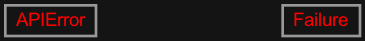
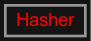
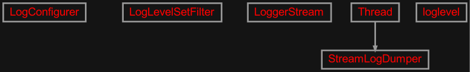
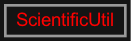
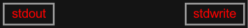
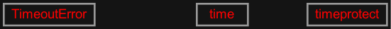

zensols.util package#
Submodules#
zensols.util.executor#
Simplifies external process handling.
- class zensols.util.executor.Executor(logger, dry_run=False, check_exit_value=0, timeout=None, async_proc=False, working_dir=None)[source]#
Bases:
objectRun a process and log output. The process is run in the foreground by default, or background. If the later, a process object is returned from
run().- __init__(logger, dry_run=False, check_exit_value=0, timeout=None, async_proc=False, working_dir=None)#
-
check_exit_value:
int= 0# Compare and raise an exception if the exit value of the process is not this number, or
Noneto not check.
zensols.util.fail#

General utility classes to measuring time it takes to do work, to logging and fork/exec operations.
- exception zensols.util.fail.APIError[source]#
Bases:
ExceptionBase exception from which almost all library raised errors extend.
- __annotations__ = {}#
- __module__ = 'zensols.util.fail'#
- __weakref__#
list of weak references to the object (if defined)
- class zensols.util.fail.Failure(exception=None, thrower=None, traceback=None, message=None)[source]#
Bases:
objectContains information for failures as caught exceptions used by programatic methods.
- __init__(exception=None, thrower=None, traceback=None, message=None)#
- print_stack(writer=<_io.TextIOWrapper name='<stdout>' mode='w' encoding='utf-8'>)[source]#
Print the stack trace of the exception that caused the failure.
- property traceback_str: str#
The stack trace as a string.
:see
print_stack()
- write(depth=0, writer=<_io.TextIOWrapper name='<stdout>' mode='w' encoding='utf-8'>)[source]#
Write the contents of this instance to
writerusing indentiondepth.- Parameters:
depth (
int) – the starting indentation depthwriter (
TextIOBase) – the writer to dump the content of this writable
zensols.util.hasher#

Utilities for hashing text.
zensols.util.log#

Utility classes and context managers around logging.
- class zensols.util.log.LogConfigurer(logger=<RootLogger root (WARNING)>, log_format='%(asctime)s %(levelname)s %(message)s', level=None)[source]#
Bases:
objectConfigure logging to go to a file or Graylog.
- class zensols.util.log.LoggerStream(logger, log_level=20)[source]#
Bases:
objectEach line of standard out/error becomes a logged line
- class zensols.util.log.StreamLogDumper(stream, logger, level)[source]#
Bases:
ThreadRedirect stream output to a logger in a running thread.
- __init__(stream, logger, level)[source]#
This constructor should always be called with keyword arguments. Arguments are:
group should be None; reserved for future extension when a ThreadGroup class is implemented.
target is the callable object to be invoked by the run() method. Defaults to None, meaning nothing is called.
name is the thread name. By default, a unique name is constructed of the form “Thread-N” where N is a small decimal number.
args is a list or tuple of arguments for the target invocation. Defaults to ().
kwargs is a dictionary of keyword arguments for the target invocation. Defaults to {}.
If a subclass overrides the constructor, it must make sure to invoke the base class constructor (Thread.__init__()) before doing anything else to the thread.
- run()[source]#
Method representing the thread’s activity.
You may override this method in a subclass. The standard run() method invokes the callable object passed to the object’s constructor as the target argument, if any, with sequential and keyword arguments taken from the args and kwargs arguments, respectively.
- class zensols.util.log.loglevel(name='', level=10, init=None, enable=True)[source]#
Bases:
objectObject used with a
withscope that sets the logging level temporarily and sets it back.Example:
with loglevel(__name__): logger.debug('test') with loglevel(['zensols.persist', 'zensols.config'], init=True): logger.debug('test')
- __init__(name='', level=10, init=None, enable=True)[source]#
Configure the temporary logging setup.
- Parameters:
name (
Union[List[str],str,None]) – the name of the logger to set, or if a list is passed, configure all loggers in the list; if a string, configure all logger names split on spaces; ifNoneorFalse, do not configure anything (handy for REPL prototyping); default to the root logger to log everythinglevel (
int) – the logging level, which defaults tologging.DEBUGinit (
Union[bool,int]) – if notNone, initialize logging withlogging.basicConfig()using the given level orTrueto uselogging.WARNINGenable (
bool) – ifFalse, disable any logging configuration changes for the block
zensols.util.pkgres#
A convenience class around the pkg_resources module.
- class zensols.util.pkgres.PackageResource(name, file_system_defer=True)[source]#
Bases:
objectContains resources of installed Python packages. It makes the
distributionavailable and provides access to to resource files withget_path()and as an index.- __init__(name, file_system_defer=True)#
- property distribution: DistInfoDistribution | None#
The package distribution.
- Returns:
the distribution or
Noneif it is not installed
-
file_system_defer:
bool= True# Whether or not to return resource paths that point to the file system when this package distribution does not exist.
- See:
- get_path(resource)[source]#
Return a resource file name by name. Optionally return resource as a relative path if the package does not exist.
- Parameters:
resource (
str) – a forward slash (/) delimited path (i.e.resources/app.conf) of the resource name- Return type:
- Returns:
a path to that resource on the file system or
Noneif the package doesn’t exist, the resource doesn’t exist andfile_system_deferisFalse
zensols.util.sci#

Scientific utilities.
- class zensols.util.sci.ScientificUtil[source]#
Bases:
objectA class containing utility methods.
- static fixed_format(v, length=1, add_pad=False)[source]#
Format a number to a width resorting to scientific notation where necessary. The returned string is left padded with space in cases where scientific notation is too wide for
v > 0. The mantissa is cut off also forv > 0when the string version of the number is too wide.
zensols.util.std#

Utility classes for system based functionality.
- class zensols.util.std.stdout(path=None, extension=None, recommend_name='unnamed', capture=False, logger=<Logger zensols.util.std (WARNING)>, open_args='w')[source]#
Bases:
objectWrite to a file or standard out. This is desigend to be used in command line application (CLI) applications with the
zensols.climodule. Application class can pass apathlib.Pathto a method with this class.Example:
def write(self, output_file: Path = Path('-')): """Write data. :param output_file: the output file name, ``-`` for standard out, or ``+`` for a default """ with stdout(output_file, recommend_name='unknown-file-name', extension='txt', capture=True, logger=logger): print('write data')
-
FILE_RECOMMEND_NAME:
ClassVar[str] = '+'# The string used to indicate to use the recommended file name.
- __init__(path=None, extension=None, recommend_name='unnamed', capture=False, logger=<Logger zensols.util.std (WARNING)>, open_args='w')[source]#
Initailize where to write. If the path is
Noneor its name isSTANDARD_OUT_PATH, then standard out is used instead of opening a file. Ifpathis set toFILE_RECOMMEND_NAME, it is constructed fromrecommend_name. If no suffix (file extension) is provided forpaththenextesionis used if given.- Parameters:
extension (
str) – the extension (sans leading dot.) to postpend to the path if one is not provied in the file namerecommend_name (
str) – the name to use as the prefix ifpathis not providedcapture (
bool) – whether to redirect standard out (sys.stdout) to the file provided bypathif not already indicated to be standard outlogger (
Logger) – used to log the successful output of the file, which defaults to this module’s loggeropen_args (
str) – the arguments given toopen(), which defaults towif none are given
-
FILE_RECOMMEND_NAME:
- class zensols.util.std.stdwrite(stdout=None, stderr=None)[source]#
Bases:
objectCapture standard out/error.
- __init__(stdout=None, stderr=None)[source]#
Initialize.
- Parameters:
stdout (
TextIOBase) – the data sink for stdout (i.e.io.StringIO)stdout – the data sink for stderr
zensols.util.tempfile#
Classes to generate, track and clean up temporary files.
- class zensols.util.tempfile.TemporaryFileName(directory=None, file_fmt='{name}', create=False, remove=True)[source]#
Bases:
objectCreate a temporary file names on the file system. Note that this does not create the file object itself, only the file names. In addition, the generated file names are tracked and allow for deletion. Specified directories are also created, which is only needed for non-system temporary directories.
The object is iterable, so usage with
itertools.islicecan be used to get as many temporary file names as desired. Calling instances (no arguments) generate a single file name.- __init__(directory=None, file_fmt='{name}', create=False, remove=True)[source]#
Initialize with file system data.
- Parameters:
directory (
str) – the parent directory of the generated filefile_fmt (
str) – a file format that substitutesnamefor the create temporary file name; defaults to{name}create (
bool) – ifTrue, createdirectoryif it doesn’t existremove (
bool) – ifTrue, remove tracked generated file names if they exist
- See tempfile:
- class zensols.util.tempfile.tempfile(*args, **kwargs)[source]#
Bases:
objectGenerate a temporary file name and return the name in the
withstatement. Arguments to the form are the same asTemporaryFileName. The temporary file is deleted after completion (seeTemporaryFileName).Example:
with tempfile('./tmp', create=True) as fname: print(f'writing to {fname}') with open(fname, 'w') as f: f.write('this file will be deleted, but left with ./tmp\n')
zensols.util.time#

Peformance measure convenience utils.
- exception zensols.util.time.TimeoutError[source]#
Bases:
ExceptionRaised when a time out even occurs in
timeout()ortimeprotect.- __module__ = 'zensols.util.time'#
- __weakref__#
list of weak references to the object (if defined)
- class zensols.util.time.time(msg='finished', level=20, logger=None)[source]#
Bases:
objectUsed in a
withscope that executes the body and logs the elapsed time.Format f-strings are supported as the locals are taken from the calling frame on exit. This means you can do things like:
- with time(‘processed {cnt} items’):
cnt = 5 tm.sleep(1)
which produeces:
processed 5 items.See the initializer documentation about special treatment for global loggers.
- __init__(msg='finished', level=20, logger=None)[source]#
Create the time object.
If a logger is not given, it is taken from the calling frame’s global variable named
logger. If this global doesn’t exit it logs to standard out. Otherwise, standard out/error can be used if givensys.stdoutorsys.stderr.- Parameters:
msg (
str) – the message log when exiting the closurelogger (
Union[Logger,TextIOBase]) – the logger to use for logging or a file like object (i.e.sys.stdout) as a data synclevel – the level at which the message is logged
- zensols.util.time.timeout(seconds=10, error_message='STREAM ioctl timeout')[source]#
This creates a decorator called @timeout that can be applied to any long running functions.
So, in your application code, you can use the decorator like so:
from timeout import timeout # Timeout a long running function with the default expiry of # TIMEOUT_DEFAULT seconds. @timeout def long_running_function1(): pass
This was derived from the David Narayan’s StackOverflow thread.
- class zensols.util.time.timeprotect(seconds=10, timeout_handler=None, context=None, error_message='STREAM ioctl timeout')[source]#
Bases:
objectInvokes a block and bails if not completed in a specified number of seconds.
- Parameters:
seconds – the number of seconds to wait
timeout_handler – function that takes a single argument, which is this
timeprotectobject instance; ifNone, then nothing is done if the block times outcontext – an object accessible from the
timeout_handerviaself, which defaults toNone
- See: